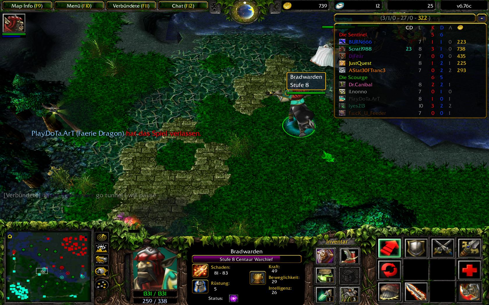

Sources
(The inspiration for League of Legends, a Warcraft III: The Frozen Throne mod called "Defense of the Ancients (DotA)." Image via Blizzard Entertainment).
Most of sources used in this project are included (hyperlinked) along with the analysis in each portal. However, my work is also directly inspired by articles written by legal scholars who have analyzed eSports, all of which have not been directly included in the portals. Linked here is a working literature review/references doc including most of the literature read and synthesized prior to the creation of this project. More recent works, such the article by Uriah Tagle referenced in the collective bargaining & unionization section, have yet to be included in the review.